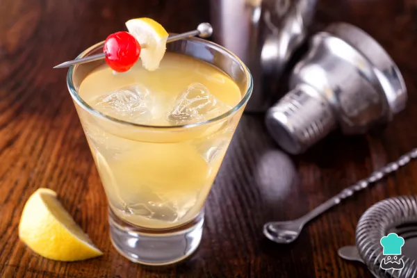
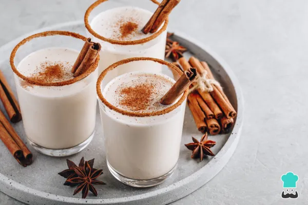
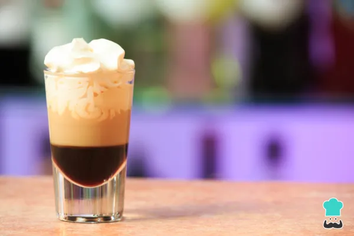
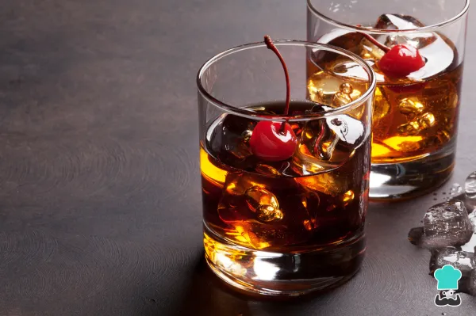

LISTA DE BEBIDAS Y/O COCKETELERIA

Whisky Sour

Dulce de Leche al Whisky

Blowjob Shot

Manhattan
El whisky (del gaélico escocés: uisge-beatha), whiskey (del irlandés: uisce beatha o fuisce), es una bebida alcohólica y espirituosa obtenida por la destilación de la malta fermentada de cereales como cebada, trigo, centeno y maíz, y su posterior añejamiento en barriles de madera, tradicionalmente de roble blanco. Esta bebida alcohólica se comercializa con un contenido alcohólico de entre 40 % y 62 % de volumen. El término whisky o whiskey deriva del gaélico escocés uisge beatha y del gaélico irlandés uisce beathadh, que significa «agua de vida» (por ejemplo, el aquavit escandinavo comparte la misma etimología, pasando por el latín aqua vitæ).
Whisky Sour
Dulce de Leche al Whisky
Blowjob Shot
Manhattan